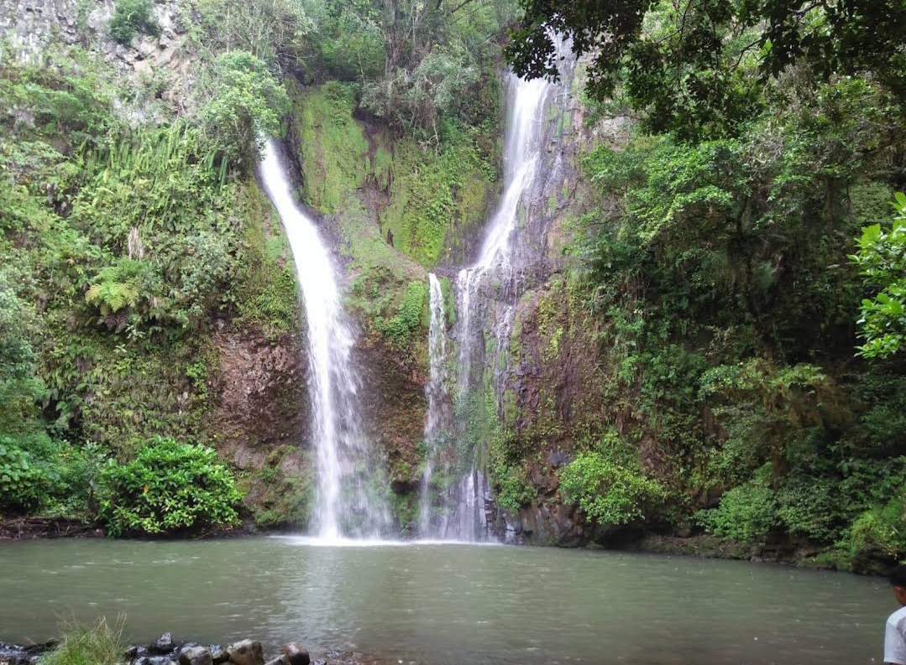

Desember - Maret
Sejuk, 20-26°C, sering hujan
Low Season
Musim Hujan di Tana Toraja udara jadi lebih sejuk dan segar, kabut sering turun di pagi hari. Pemandangan Toraja berubah jadi hijau pekat, sawah dan bukit terlihat subur.
Merupakan waktu terbaik untuk melihat air terjun seperti Sarambu Assing, Upacara Rambu Tuka' atau syukuran rumah baru juga banyak digelar. Wisatawan lebih sepi, jadi cocok untuk yang suka suasana tenang dan harga penginapan lebih murah.
1. Bawa jas hujan & sepatu anti slip - Jalanan ke desa-desa bisa licin dan berlumpur.
2. Sedia payung di tas - Hujan bisa turun tiba-tiba walau pagi cerah.
3. Pilih penginapan di kota - Akses lebih mudah kalau hujan deras.
4. Manfaatkan harga low season - Banyak homestay kasih diskon.
5. Cek prakiraan cuaca - Hindari trekking saat hujan lebat karena rawan longsor.